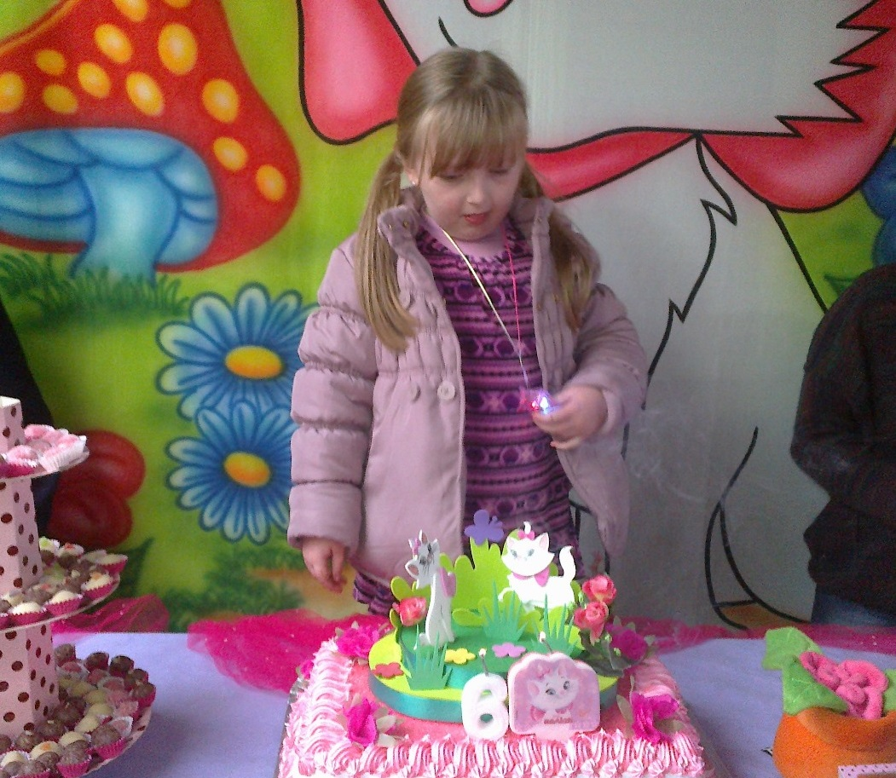

Gabi, quando surgiu a oportunidade de mandar uma carta para você, o
dindo logo pensou em uma ideia "Tech", pois eu não sou bom em escrever
carta, mas fico bem a vontade em fazer a mesma coisa de forma digital.
Então decidi inovar a recordação e fazer uma "digital letter", para
que você possa ler em seu celular a qualquer momento através do
QRCODE.
Enfim, quero que saiba que estou muito feliz em saber que está vivenciando algo extraordinário.
Estamos longe fisicamente, mas com o coração quentinho torcendo para que tudo ocorra da melhor maneira e que esteja aproveitando cada momento. Não sei exatamente o dia que vai ler esta carta, mas sempre que eu viajo, guardo as melhores recordações vivendo elas e não fazendo fotos, então se ler isto no princípio da sua aventura, lembre-se de viver os momentos e guardar as melhores imagens dentro de você, muitas vezes as pessoas perdem as melhores recordações tentando fotografar algo que não é possível explicar depois, se não vivenciar, se não estiver no lugar, se torna indescritível. Então vai meu primeiro pedido, viva intensamente cada momento, eles serão únicos para você.
Enfim, quero que saiba que estou muito feliz em saber que está vivenciando algo extraordinário.
Estamos longe fisicamente, mas com o coração quentinho torcendo para que tudo ocorra da melhor maneira e que esteja aproveitando cada momento. Não sei exatamente o dia que vai ler esta carta, mas sempre que eu viajo, guardo as melhores recordações vivendo elas e não fazendo fotos, então se ler isto no princípio da sua aventura, lembre-se de viver os momentos e guardar as melhores imagens dentro de você, muitas vezes as pessoas perdem as melhores recordações tentando fotografar algo que não é possível explicar depois, se não vivenciar, se não estiver no lugar, se torna indescritível. Então vai meu primeiro pedido, viva intensamente cada momento, eles serão únicos para você.
Aperta aqui para ler mais :)
Lembro que você me cumprimentou com muito receio, naquele momento era apenas o namorado da dinda.
